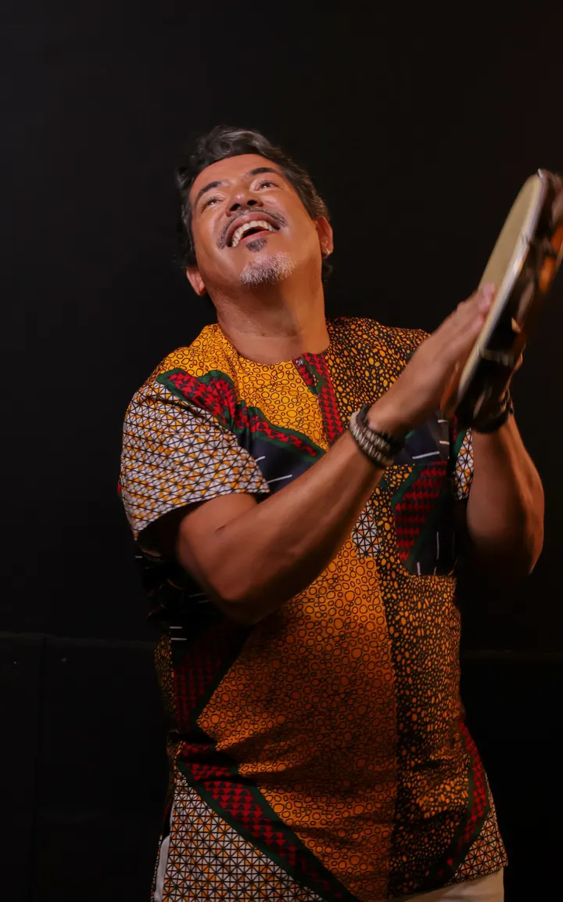
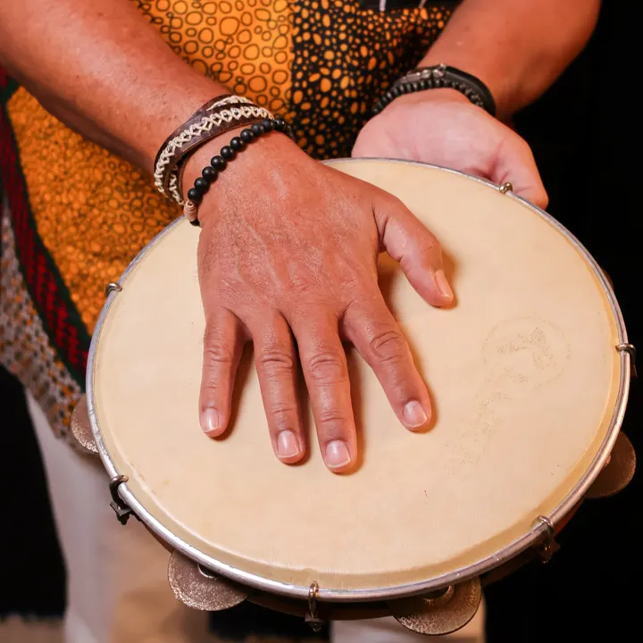
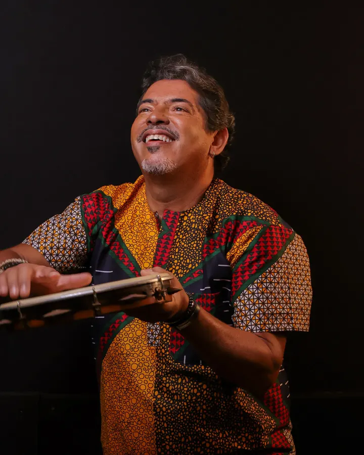

4 cursos de percussão brasileira por R$ 198
Pandeiro, timbau, zabumba e congas: os 4 cursos online do professor Orlando Bolão, num pacote só.
Separados: de R$ 397,83 −50%
por R$ 198 pelos 4 cursos
Você economiza R$ 199,83
R$ 49,50 por curso
A condição de R$ 198 pelos 4 cursos ainda não começou.
Esta condição terminou em 30 de novembro de 2026, às 23h59 (horário de Brasília). Deixe seu e-mail abaixo para ser avisado da próxima.

Os 4 cursos
Um curso para cada instrumento. Tudo o que está no pacote está descrito aqui.
Meta Timbau
- Nível
- Do básico ao avançado
O que você aprende
- 15 ritmos de timbal, um por um, em progressão do básico ao avançado
- Postura, distribuição do peso e uso das mãos e do braço para tocar com força sem se esgotar
- Som limpo e forte: força com técnica, não força bruta
Meta Zabumba
O que você aprende
- Ritmos nordestinos com contagem, metrônomo e partitura
- Os mesmos ritmos em diferentes andamentos, para praticar
- O diálogo entre o grave da zabumba e o bacalhau, que forma o groove do forró
Ritmos para Congas
- Para quem é
- Para quem quer levar a técnica das congas para dentro dos ritmos e ampliar o repertório. O curso foi pensado como continuação do livro Meta Congas, que é vendido à parte e não faz parte deste pacote.
O que você aprende
- 14 ritmos para congas, de matrizes afro-brasileira, afro-cubana e afro-baiana e da música popular brasileira
- Como aplicar os rudimentos do Meta Congas dentro do ritmo, até virar groove e repertório
Os 4 cursos, um preço
Os 4 cursos por R$ 198
R$ 49,50 por curso
| Meta Pandeiro | R$ 99,99 |
|---|---|
| Meta Timbau | R$ 99,97 |
| Meta Zabumba | R$ 97,90 |
| Ritmos para Congas | R$ 99,97 |
| Os 4 separados | R$ 397,83 |
| Os 4 no pacote de Black Friday | R$ 198 |
A condição de R$ 198 pelos 4 cursos ainda não começou.
Esta condição terminou em 30 de novembro de 2026, às 23h59 (horário de Brasília). Deixe seu e-mail abaixo para ser avisado da próxima.
Orlando Bolão em ação




Quem é Orlando Bolão
Orlando Bolão é percussionista, produtor musical e educador baiano, de Salvador.
- Profissional desde os 13 anos. Estudou percussão popular afro-brasileira no Instituto Ilú Batá.
- Integrou a Banda Cheiro de Amor por 11 anos, a partir de 1989, com turnês pelo mundo.
- Tocou com Daniela Mercury, Roberta Miranda, Jair Rodrigues, Gaby Amarantos, Claudia Leitte, Omara Portuondo, Alejandro Sanz, Gloria Estefan e Eumir Deodato, entre outros.
- Gravou e produziu trilhas para 37 projetos da Rede Globo, entre novelas e minisséries, como O Canto da Sereia, Amores Roubados, Joia Rara e A Dona do Pedaço.
- Produziu e compôs a trilha do documentário Dorivando Saravá, o Preto que Virou Mar (2018), sobre Dorival Caymmi.
- Discos solo: Back 2 Bahia (2002), Happiness (2019) e Acarajé de La Music (2024).
- Um dos autores do livro Uma Árvore da Música Brasileira (Selo Sesc), com artigo sobre a história dos ritmos da Bahia.
- Professor substituto na EMESP Tom Jobim desde 2017.
- Autor do livro Meta Congas, apresentado como o primeiro livro de rudimentos para congas escrito no Brasil, com 62 videoaulas acessadas por QR Code.
Perguntas frequentes
Quem é o professor?
Orlando Bolão é percussionista, produtor musical e educador baiano, de Salvador.
- Profissional desde os 13 anos. Estudou percussão popular afro-brasileira no Instituto Ilú Batá.
- Integrou a Banda Cheiro de Amor por 11 anos, a partir de 1989, com turnês pelo mundo.
- Tocou com Daniela Mercury, Roberta Miranda, Jair Rodrigues, Gaby Amarantos, Claudia Leitte, Omara Portuondo, Alejandro Sanz, Gloria Estefan e Eumir Deodato, entre outros.
- Gravou e produziu trilhas para 37 projetos da Rede Globo, entre novelas e minisséries, como O Canto da Sereia, Amores Roubados, Joia Rara e A Dona do Pedaço.
- Produziu e compôs a trilha do documentário Dorivando Saravá, o Preto que Virou Mar (2018), sobre Dorival Caymmi.
- Discos solo: Back 2 Bahia (2002), Happiness (2019) e Acarajé de La Music (2024).
- Um dos autores do livro Uma Árvore da Música Brasileira (Selo Sesc), com artigo sobre a história dos ritmos da Bahia.
- Professor substituto na EMESP Tom Jobim desde 2017.
- Autor do livro Meta Congas, apresentado como o primeiro livro de rudimentos para congas escrito no Brasil, com 62 videoaulas acessadas por QR Code.
Separados: de R$ 397,83 · você economiza R$ 199,83
4 cursos por R$ 198R$ 49,50 por curso
Condição válida até 30 de novembro de 2026, às 23h59 (horário de Brasília).
A condição de R$ 198 pelos 4 cursos ainda não começou.
Esta condição terminou em 30 de novembro de 2026, às 23h59 (horário de Brasília). Deixe seu e-mail abaixo para ser avisado da próxima.